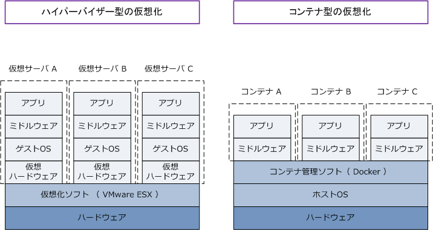

Containerization
仮想化技術 - コンテナ型
仮想化技術には、サーバ仮想化技術のハイパーバイザー型とホストOS型に加えて、コンテナ型があります。 1つの物理マシン上に多数の独立した仮想環境を構築するという観点から上述の3つともサーバ仮想化技術 とも言えますが、「ハイパーバイザー型・ホストOS型」と「コンテナ型」とで次の点で大きく異なります。 ※ 本記事では、代表的なサーバ仮想化技術の「ハイパーバイザー型」とコンテナ技術の「コンテナ型」を比較しながら解説します。
| 仮想化技術 | 説明 |
|---|---|
| ハイパーバイザー型 | 1つの物理マシン上にインストールした仮想化ソフトウェア（例：VMware ESX）により プロセッサやメモリなどのハードウェアリソースを論理的に分割し複数の独立したサーバのように 機能させられる技術。生成した独立したサーバは仮想サーバまたは仮想マシン（VM）と呼ばれる。 |
| コンテナ型 | 1つの物理マシンの1つのOS上にインストールしたコンテナ管理ソフトウェア（例：Docker）で コンテナと呼ばれる他のユーザから独立したアプリケーションの実行環境を構築することにより 複数の独立したサーバのように機能させる技術。 |

ハイパーバイザー型とコンテナ型のメリットとデメリットは以下の通りです。コンテナ型ではハードウェア リソースの消費が少なく、可搬性も高く、運用コストを抑制できるメリットがあるが、特定のOSに縛られる デメリットがあります。一方、ハイパーバイザー型では仮想サーバごとに異なるOSを使用できるなど自由度 が高いメリットがあるが、ハードウェアリソースの負担が大きく、運用管理のコストも大きく、可搬性も低い というデメリットもあります。どちらを採用するかは、要件や用途に応じて適切に選定する必要があります。
| 仮想化技術 | メリットとデメリット |
|---|---|
| ハイパーバイザー型 | ◆ メリット ・ 仮想サーバ（仮想マシン）ごとに異なるOSを稼働させられることから、仮想サーバごとに 柔軟に運用を分けることができるという自由度が高い点。 ◆ デメリット ・ 仮想サーバ（仮想マシン）ごとにゲストOSを起動させる必要があり、仮想サーバごとに プロセッサ、メモリ、ストレージなどのハードウェアリソースが必要となる。 ・ 仮想サーバごとにOSを管理する必要があり、運用管理に多くの工数が必要となってくる。 |
| コンテナ型 | ◆ メリット ・ 1つのホストOSで稼働することから、プロセッサ、メモリ、ストレージなどのハードウェア リソースの消費が少ないことからも、仮想サーバと比較して短時間で起動・停止ができる。 ・ ハードウェアとホストOSの上位に位置するコンテナ管理ソフトウェアが、ハードウェアや OSごとの違いを吸収してくれることから、既にアプリとミドルウェアの動作確認できている コンテナであれば、他のサーバに移動させても確実に動作することを保証してくれる。 ・ コンテナごとのアプリの実行環境を管理する際、コンテナ型ではOS環境を共有していること からも、ハイパーバイザー型のようの個別のOS管理は不要となり運用コストが抑制できる。 ◆ デメリット ・ コンテナごとに異なるOSを動作させられずOS依存が発生することから、柔軟な運用ができず 要件によりコンテナ化できないケースが発生する。 ・ 複数のコンテナが1つのホストOSで稼働するため、大本となるそのホストOSに不具合が発生 した場合、全てのコンテナが影響を受けることになる。 |